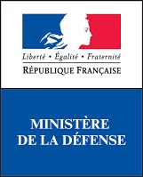

À TOI DE DÉCRYPTER LE CODE


Objectifs

Aujourd’hui, les questions de sécurité des données sont un des enjeux majeur de notre société, que ce soit pour protéger les transactions bancaires ou garantir la protection de la vie privée. Tout cela est rendu possible grâce aux mathématiques et à l’informatique.
Nous souhaitons faire découvrir aux lycéens cette application très concrète des mathématiques, qui joue un rôle énorme dans leur vie quotidienne. Nous voulons leur montrer qu’il est possible de prendre du plaisir en faisant des mathématiques. Enfin, nous souhaitons les sensibiliser à la question importante de la
sécurité de l’information.
Ce concours rentre dans le cadre de la Stratégie mathématiques et du plan École numérique du Ministère de l’Éducation nationale.
établissement français peuvent participer à la
compétition.
Pas du tout. Au contraire, c’est le principe ! Ce concours s’adresse à des gens qui n’ont jamais fait de cryptanalyse. Lors de l’épreuve en temps limité, toutes les informations nécessaires seront contenues dans le sujet.
Le concours est accessible pour tous les élèves de seconde. Lors de la première épreuve, ouverte à tous, chaque question comporte trois niveaux de difficulté. Ainsi, chaque participant peut s’amuser à résoudre des défis adaptés à son niveau. La difficulté augmente lors des tours suivants
Pas nécessairement. Si vous avez réussi le brevet c’est que vous avez un niveau en mathématiques suffisant pour pouvoir répondre aux questions.
Il n’y a pas de prérequis autres que le programme de collège. Venez avec l’esprit ouvert, faites preuve de logique et suivez les consignes. Et surtout amusez vous !
La première équipe se verra offrir un ordinateur portable par personne. Les seconds gagneront des tablettes tactiles, les troisièmes des smartphones.
Les membres des 25 meilleures équipes nationales ainsi que de la meilleure équipe de chaque académie gagneront des livres de cryptographie.
Les équipes gagnantes seront conviées à une cérémonie officielle de remise des prix à Paris.
Les associations
Al Kindi est organisé conjointement par deux associations :

Animath
Animath est une association dont le but est de promouvoir l’activité des mathématiques chez les jeunes tout en développant le plaisir de faire des mathématiques.

France IOI
France IOI est une association dont l’objectif est de faire découvrir la programmation et l’algorithmique au plus grand nombre de personnes possible.
Nos partenaires

Le Ministère de l’Éducation Nationale
Le Ministère de l’Éducation Nationale soutientle concours Al Kindi puisque celui-ci s’inscrit pleinement dans le cadre de la Stratégie mathématiques et du plan École numérique du Ministère.

Le Ministère de la Défense
Le Ministère de la Défense encourage la promotion d’actions de sensibilisation à la sécurité des données.
Les personnes
Mathias Hiron
Razvan Barbulescu
Matthieu Lequesne
Ils nous soutiennent